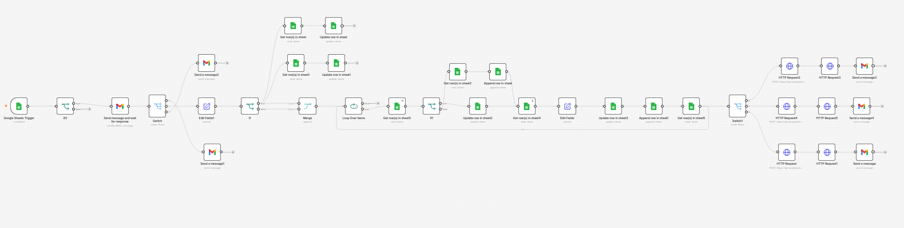

01 AUTOMATISATION IA
PAIEMENT · VALIDATION · DOCUMENTS
Du paiement au reçu,
sans perdre le fil.
LE PROBLÈME
Le traitement manuel des paiements et l’envoi des justificatifs multiplient les vérifications et prennent du temps.
LA SOLUTION
n8n coordonne le contrôle, la validation, la mise à jour dans Google Sheets et l’envoi du reçu par Gmail.

Capture du workflow n8nOuvrir en grand ↗OUTILS · n8n · Google Sheets · Gmail
PARCOURS DU WORKFLOW01 — 05
- 01Nouvelle entréeGoogle Sheets
- 02Vérificationinfos du dossier
- 03Validationcontrôle humain
- 04Reçu générédocument PDF
- 05Envoi clientGmail